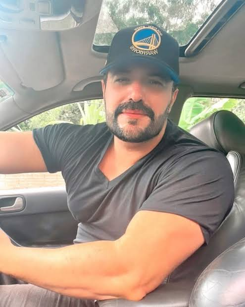

Rubens Júnior é advogado de divórcio pós-graduado em Direito de Família e especialista em processos de divórcio e pensão alimentícia, possui mais de 11 anos de experiência no Direito de Família. Seu vasto acervo jurídico garante resoluções eficazes para seus clientes em casos de separação, divórcio e pensão alimentícia.
Oferecemos soluções assertivas na resolução dos casos. Entre em contato agora e experimente uma abordagem humanizada e eficiente.
Já ajudamos mais de 1.000 clientes com:
Agende uma consulta gratuita com nosso advogado especialista em Direito de Família e entenda o nosso método de sucesso que nos faz ter nota alta de satisfação.
Experiência preparada para a administração da justiça e excelência na defesa dos interesses das partes em juízo.
Foco em eficiência e precisão, somos parte instrumental do sucesso dos nossos clientes, por meio de aconselhamento jurídico.
Nossos honorários podem ser parcelados em até 12x sem juros, através de boleto bancário ou cartão de crédito.
Utilizamos estratégias vencedoras comprovadas pelos nossos atendimentos e resoluções.
Possuímos experiência e grande acervo jurídico de alta eficácia na resolução dos casos.
Atendimento personalizado. Aqui, cada cliente é único. Suas histórias e objetivos são importantes para nós.
Excelente profissional. Conduziu meu divórcio com total segurança e clareza.

Atendimento rápido e muito humano. Resolvi meu caso de pensão com tranquilidade.
Advogado extremamente competente. Recomendo para qualquer questão familiar.